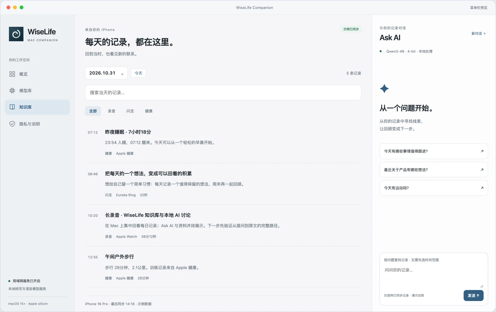
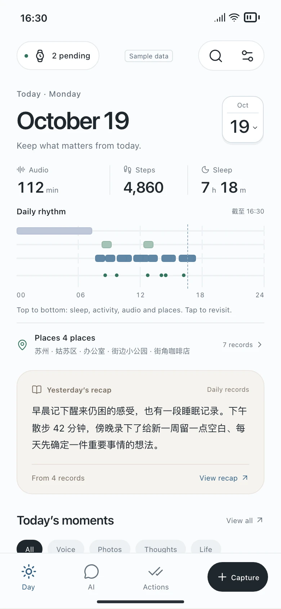
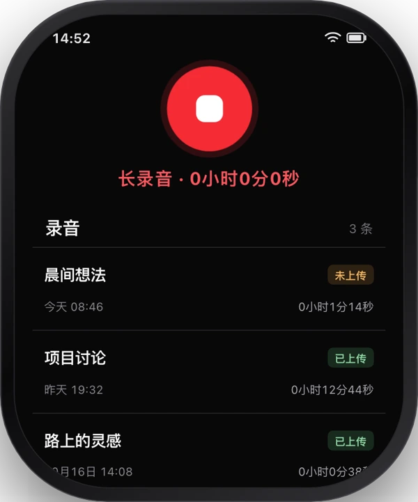
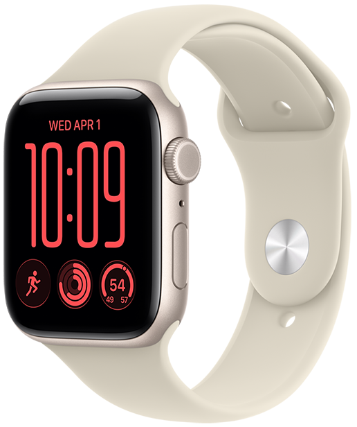
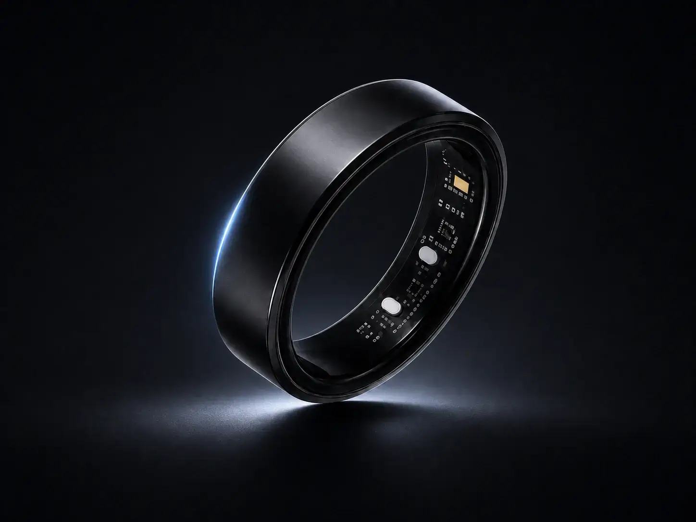

A longer recording.
Keep a conversation or a discussion. Tap again when you’re done.
Personal AI. Privacy first.
Capture on your Watch. Understand on your iPhone. Go deeper with a Mac you control.



Small moments, brought together. A clearer picture of your day, on devices that belong to you.
A quick thought or a longer conversation, captured from your wrist. Recordings transfer to your paired iPhone for review and transcription.
Explore the Watch demoNo WiseLife cloud account required.
Start with iPhone. Add the devices that fit your life.
A day is more than a calendar or a step count. Bring your moments, plans and everyday rhythm into focus.
See activity, rest and meaningful moments together.
Find the commitments worth your attention.
Follow the sources. Decide for yourself.
Planned Today experience. Illustrative data, not a health assessment or a released dashboard.
A little space to move forward.
Here’s how your day is taking shape.The next calendar event is at 3:30 PM. A voice note mentions a proposal draft you want to finish. A free calendar slot does not guarantee you are available.
“Keep one idea a day. Look back on Sunday.”
The best ideas rarely wait for an empty page. Keep the moment, then get back to living it.
Keep a conversation or a discussion. Tap again when you’re done.
Press and hold to capture an idea. Release to save it.
Listen back, read the transcript and find what matters.
You choose when recording starts and stops. WiseLife does not continuously listen in the background.
A conversation becomes a memory. A memory reveals an insight. You decide what happens next.
Interactive example · Sample data · No changes to Apple Reminders
Private by design
Your memories stay on your iPhone by default. Choose where your AI runs, and what you share.
No WiseLife cloud account.
No WiseLife cloud storage.
No automatic cloud AI fallback.
iCloud backups and Apple Calendar or Reminders syncing follow your Apple settings.
Read our privacy policyHave a compatible Apple Watch? You already have a way in. Add more only when it fits your life.
Your iPhone. Your Apple Watch.
A personal place for your memories and AI.
Planned one-time purchase. Bring your own compatible devices. Third-party AI costs are separate.
Get App launch updates
Bring more capable local models to a Mac you control.
Explore the Mac prototype Pricing and release date to be announced.An optional, more discreet way to keep a thought close.

Follow the Ring launch Integration is in place. Hardware availability and campaign details will be announced separately.Be part of the beginning
Help shape a personal AI that remembers what matters, respects your privacy, and helps you take the next step.
Explore the product demoThis is how the next step will look. In the live service, you’ll confirm your email first. No email was sent in this preview.
Joining the launch list will be free. It will not reserve a product or guarantee delivery. App, Mac and Ring have separate release plans.
Yes. Record and manage your memories on iPhone. A compatible Apple Watch or EurekaRing adds a more convenient capture option. Mac Companion is an optional extension in development.
This page previews the launch experience. Official App Store, TestFlight, Mac downloads and crowdfunding links will appear when each is available. The interactive demos use sample data.
Supported local models can work offline after download. Availability depends on your hardware, language, region and model. WiseLife does not automatically switch to cloud AI.
The proactive dashboard shown here is a product vision. Some source features already exist, but the combined experience and suggestions are still subject to development and testing.
Not if you have a compatible iPhone and want to start there. A compatible Apple Watch is enough for wrist capture. EurekaRing and Mac are optional; hardware is not included in the App price.
You review and confirm important actions. Suggestions point back to source records. Adding to Apple Reminders or Calendar also requires your permission and a supported integration.